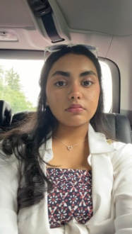
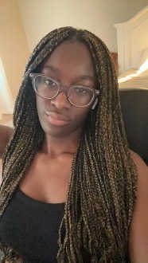
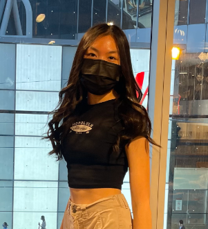

|
|
Home | About | Resources | Contact Us |
|---|
The inspiration behind creating this app stemmed from the desire to adress
the challenges that students often face when seeking educational resources
online. Our team recognized that many existing apps and platforms require
costly subscriptions making essential study materials and assistance
inaccessible to a significant portion of students. This realization,
coupled with our commitment to fostering a more inclusive and accessible
learning environment, inspired us to create our resource hub.
Moreover, we identified a specific need for assistance for those
transitioning into univeristy life. The initial stages of university can
be overwhelming, with students often feeling lost and uncertain about
where to find reliable informtion and guidance. We wanted to bridge this
gap by offering a comprehensive set of tools ad tips to ease this
transition.
The HSR hub is like a helpful friend for students. It has lots of free resources to make learning easier. You can find study materials without having to pay for anything. We know starting university can be confusing, so we also give tips to make that easier. Our app is all about making education accessible and helping students succeed, especially if they're just starting out or don't have much money to spend.
This website was built using HTML, CSS, and Javascript.
We’re a group of 4 girls (The Prodigies) that created HSR for the CLC x Prodigy Hackathon
|  |  |  |
|---|---|---|
Zaara Muqri
Founder & CreatorI'm a grade 11 student a part of the IB program at Craig Kielburger Secondary School and a Teen ambassador at Canada Learning Code. |
Lauryne AssaFounder & CreatorI’m a 2nd year computer science and business administration student as well as a mentor at CLC! |
Sophia NguyenFounder & CreatorI’m a grade 12 student in Toronto and hope to continue studying technology in post-secondary. |
Contribute |
Contact-Us |
|---|